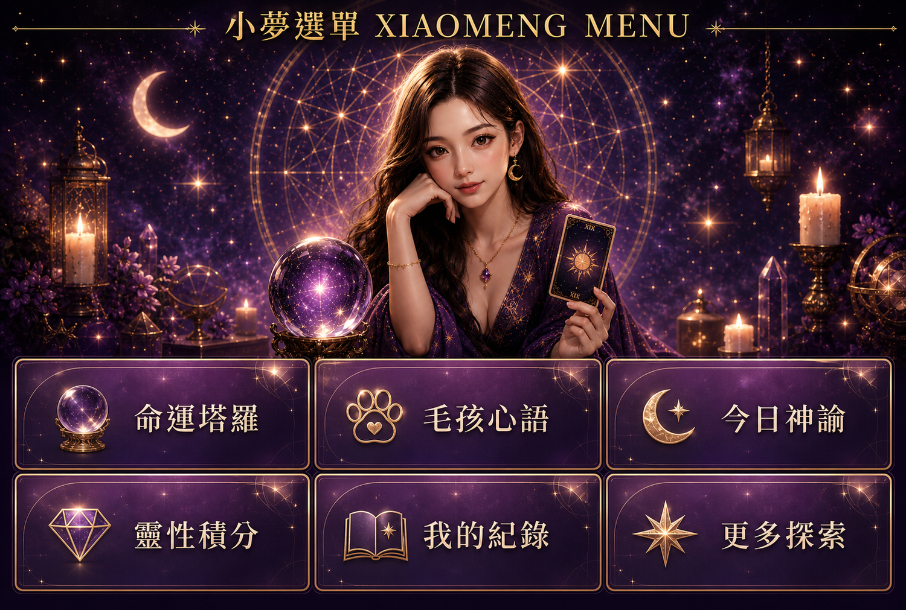

小夢老師
TAROT RITUAL
設定你的問題…
抽牌方式
TAROT RITUAL
準備洗牌
YOUR GUIDANCE
單牌占卜
牌位：現在
— 靜待你的抉擇 —
請從下方牌桌中選擇屬於你的那一張牌。
✨ 核心訊息
🌙 現況解析
💫 建議方向
🌟 今日祝福
XIAOMENG SANCTUARY
Every soul has its own constellation.
每一個靈魂,都有屬於自己的星軌。

小夢老師 · Tarot Ritual
Every soul has its own constellation.
每一個靈魂，都有屬於自己的星軌。
22 Major Arcana · 新版塔羅牌(小夢神殿 v3.0)
點任一張牌開始 11 步神聖探索儀式
小夢老師 Tarot Ritual
22 動物大師 · 毛孩心語 v1.0(小夢神殿)
點任一張牌開始 7 步神聖毛孩探索儀式 · 尊榮會員限定 · 首次免費 1 次
🌙 7 個情境可選:日常陪伴 · 關係探索 · 行為理解 · 離世悼念 · 新成員迎接 · 健康能量 · 生命禮讚
📖 完整解析見 lib/prompts/pet-divination.md(深度解析排版工具 · 2026-07-04 對齊聖經)
選擇主題後由小夢陪你抽牌
小夢老師
TAROT RITUAL
抽牌方式
TAROT RITUAL
準備洗牌
YOUR GUIDANCE
牌位：現在
請從下方牌桌中選擇屬於你的那一張牌。
✨ 核心訊息
🌙 現況解析
💫 建議方向
🌟 今日祝福
塔羅 System · Tarot
78 張大牌小牌，為你揭開未知迷霧
Pet Divination · 毛孩心靈
7 大情境，看見毛孩最真實的內在
尊榮會員限定 · 消費解鎖後開放
本單滿$599可使用50積分折抵
Oracle Cards · 神諭之聲
3 種模式，每日一句宇宙的話
輸入生日後可計算主命數。深度解析可延伸：人格優勢、感情模式、職場天賦、流年提醒與商品推薦。
免費版先整理出生資料摘要。深度解析可延伸：八字時辰、紫微命宮、流年提醒、合盤方向與擇日建議。
信任與法律 · 透明守護
個人資料 100% 加密儲存於你的本機瀏覽器,後端不留存,絕不外流第三方。
點此閱讀完整聲明 → ⚖️包含醫療、寵物醫療最高警語、財務投資三大免責,以及 599 元折抵規則。
點此閱讀完整條款 →毛孩心語・健康能量占卜 僅提供能量指引,絕對不能、亦無法取代專業獸醫師之醫學臨床診斷、手術、藥物與醫療行為。
毛孩不適請立即就醫大師指引 · 命運的下一章
每一份牌意都是引子,真正的轉化發生在日常的微小選擇。
以下聖物由小夢老師親自調頻選品,陪你走過星軌的下一段路。
新名字取代舊「簡易解析」。提供牌名、籤號、正逆位、簡短提醒與一個注意事項,適合第一次體驗神殿。
✨ 靈性點數不夠？點擊分享好友立刻免費領取 50 積分 ➔🎟️ 每月初送 3 張「單牌聖諭券」
🔮 適合每日運勢、一問一答的即時指引,快速看清當下能量障礙。
🌙 月訂自動續訂,隨時可取消
✨ 邀請好友一同加入,共同累積 50 靈性積分獎勵 ➔🎟️ 每月初送 3 張「三牌深度進階券」(現賺 NT$ 870)
🔮 解鎖【過去/現在/未來】因果流牌陣,全面破譯重大的情感與事業迷茫。
🔥 老闆強力推薦 · 深度流年指引
✨ 邀請好友一同加入,共同累積 50 靈性積分獎勵 ➔🎟️ 每月初送 3 張「五牌全知矩陣券」(尊榮頂級享受)
🔮 解鎖最高權限【五角星能量牌陣】,全方位看穿命運的明暗貴人、隱藏危機與未來 90 天極致走向。
🧙♂️ 尊榮頂級享受 · 未來 90 天極致走向
✨ 邀請好友一同加入,共同累積 50 靈性積分獎勵 ➔正在與你的星軌錢包及命運方案進行能量同步……
🔒 尊榮守護：本積分具備 7 天時效,單筆現金消費滿 $599 即可一鍵折抵 $50 元現金減免。
✨ 靈性點數不夠？點擊分享好友立刻免費領取 50 積分 ➔適合抽到「女祭司、月亮、星星」的使用者,主打直覺與自我對話。
迎請靈性聖物 ✨ 靈性點數不夠？點擊分享好友立刻免費領取 50 積分 ➔適合感情占卜後推薦,搭配睡前冥想、書寫與顯化儀式。
迎請靈性聖物 ✨ 靈性點數不夠？點擊分享好友立刻免費領取 50 積分 ➔免費命盤給摘要,完整解析導到現金消費諮詢、課程或會員訂閱。
預約大師諮詢 ✨ 靈性點數不夠？點擊分享好友立刻免費領取 50 積分 ➔大師後台
這裡顯示靈魂會員、靈性積分、深度解析解鎖與聖物選品點擊狀態。
LINE 官方帳號